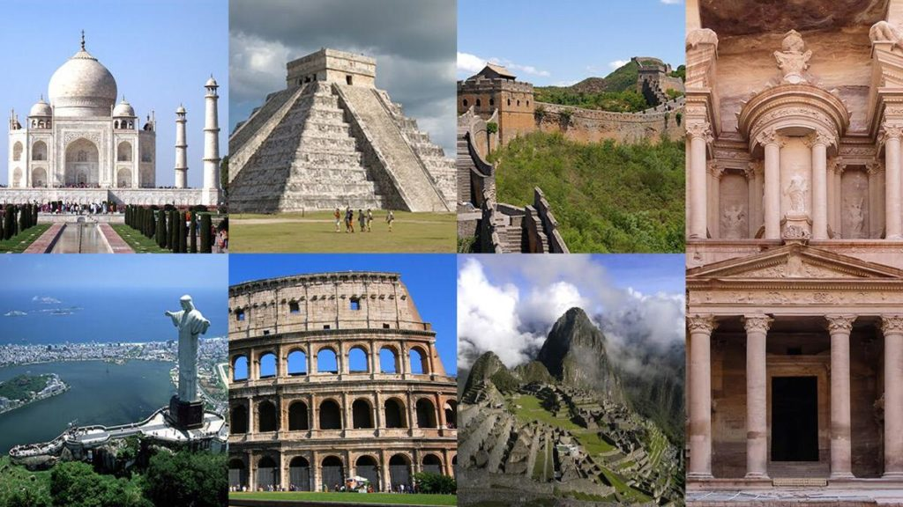

Se denominan Las Nuevas Siete Maravillas Del Mundo Moderno a los monumentos que resultaron los ganadores en un concurso publico e Internacional celebrado en 2007, inspirado en la lista de las siete maravillas del mundo antiguo y realizado por una empresa privada de nombre New Open World Corporation . Mas de cien millones de votaciones ,a traves de Internet y SMS , dieron como resultado esta nueva clasificasion. La iniciativa partio del Empresario suizo Bernard Weber ,fundador de la empresa . |
|

|